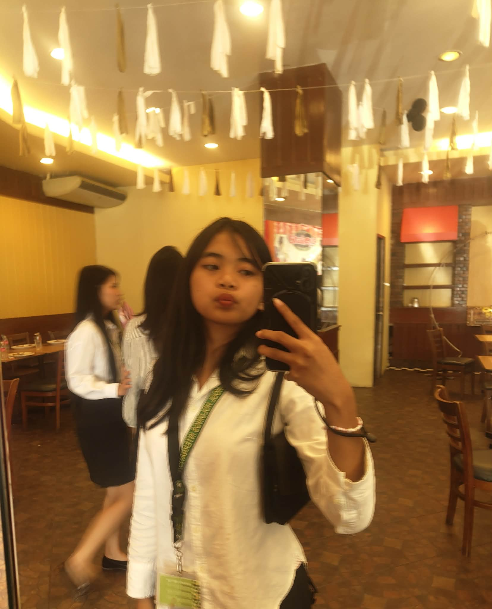
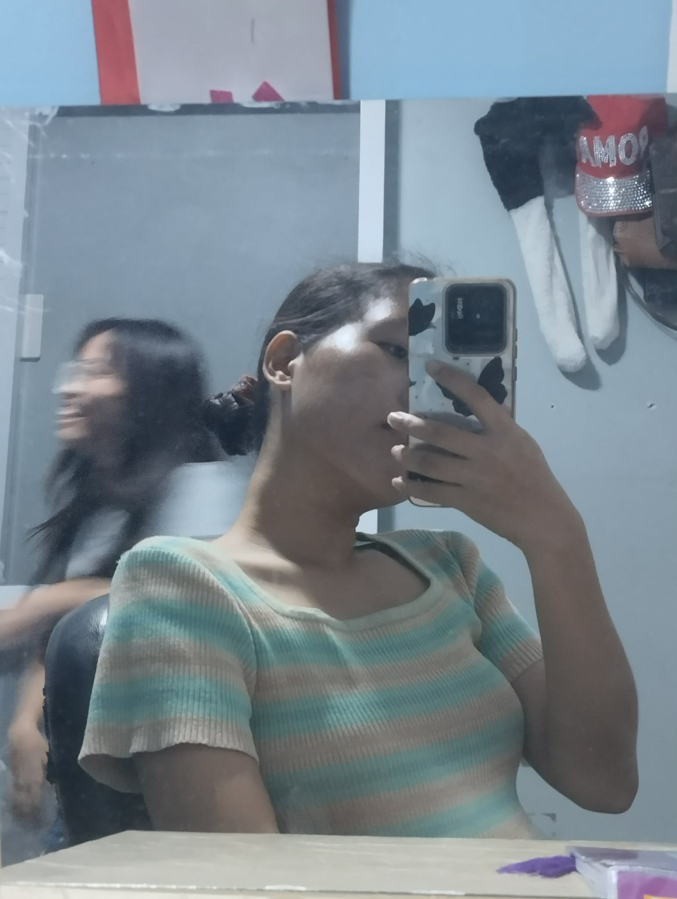
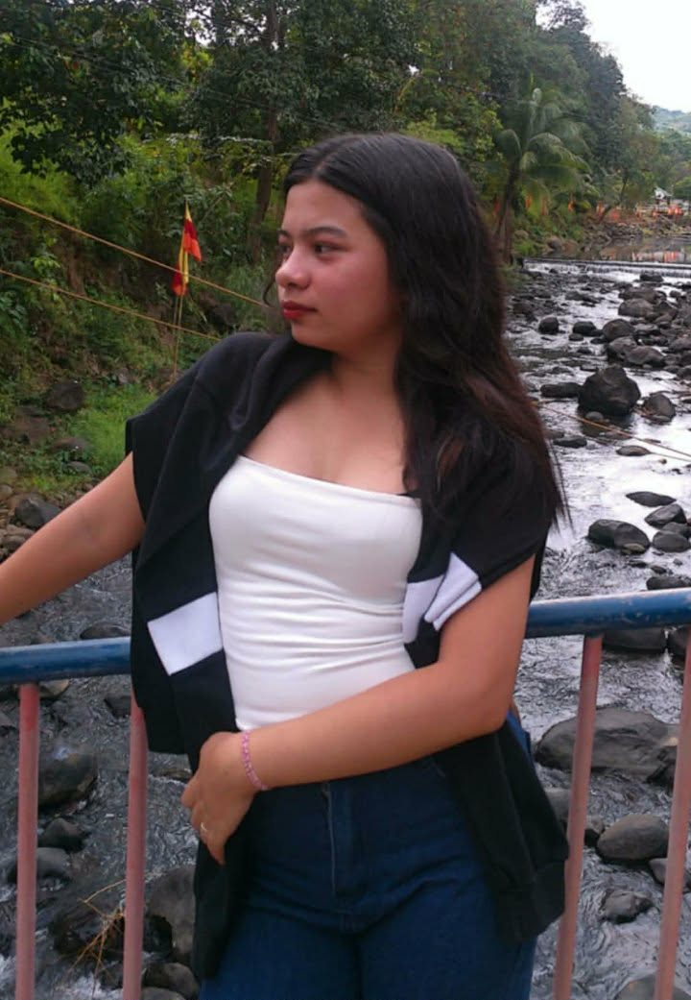

FOUR SOULS, FOUR GOALS
Mae
Dimps
Lei Anne
Thea
This website showcases the unique stories and experiences of each of us, four friends from Academia de Pulilan. Here, you can explore our journeys, memories, and projects together as we share what makes our friendship and school life special.
Our journey as four friends at Academia de Pulilan has been full of learning, laughter, and unforgettable memories. From the first day we stepped into the campus, we faced challenges together, supported each other in our studies, and celebrated our achievements as a team. The teachers guided us with patience, and the environment encouraged us to grow not only academically but also personally. Every project, activity, and event strengthened our bond, making our time at Academia de Pulilan truly special. Looking back, we are grateful for every moment, knowing that this journey has shaped us into better students and better friends.
Email: leiannepineda98@gmail.com
maeleonardo.00@gmail.com
theaelize23@gmail.com
dimplealagos015@gmail.com